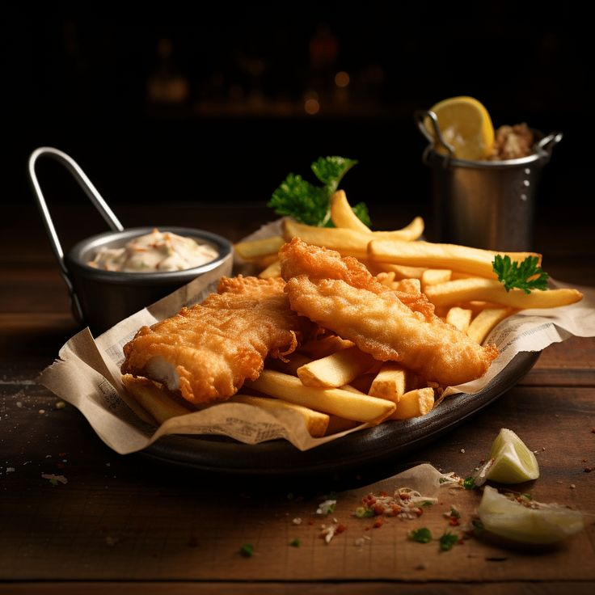

Fish and Chips
A British classic! Crispy battered fish served with golden fries and tartar sauce – a satisfying and timeless meal.

Ingredients
- 2 white fish fillets (cod/haddock)
- 1 cup all-purpose flour
- 1/2 tsp baking powder
- 1/2 tsp salt
- 1/2 cup cold soda water or beer
- Potatoes for fries
- Oil for frying
- Lemon wedges & tartar sauce to serve
Instructions
- Peel and cut potatoes into thick fries. Soak in water for 30 mins.
- Pat fish dry. Mix flour, baking powder, salt, and soda water into a batter.
- Heat oil and fry potatoes until golden and crispy. Drain and set aside.
- Dip fish in batter and fry until golden and crispy.
- Serve hot with fries, lemon wedges, and tartar sauce.